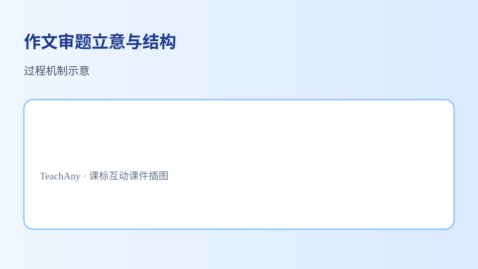

作文审题立意与结构
能凭借语感和对语言运用规律的把握，根据具体的语言情境和不同的对象，运用口头和书面语言文明得体地进行表达与交流。
 作文审题立意与结构：概念—方法—应用
作文审题立意与结构：概念—方法—应用
- 能复述课标要点：能凭借语感和对语言运用规律的把握，根据具体的语言情境和不同的对象，运用口头和书面语言文明得体地进行表达与交流。
- 能运用所学方法分析作文审题立意与结构相关典型问题
- 能在情境中正确应用作文审题立意与结构的知识与技能
- 能识别并纠正关于作文审题立意与结构的常见误区
学习「作文审题立意与结构」时，第一步最应该做什么？
先选一个，错了正好暴露你的前概念，我们一起纠正。
作文审题立意与结构是高中语文的重要内容。能凭借语感和对语言运用规律的把握，根据具体的语言情境和不同的对象，运用口头和书面语言文明得体地进行表达与交流。
讲究语言文字表达的效果及美感，具有创新意识。
作文审题立意与结构核心概念示意学习路径：明确概念→掌握方法→情境练习→反思纠错。
学习任务群的设计着眼于培养语言文字运用基础能力，充分顾及问题导向、跨文化、自主合作、个性化、创造性等因素。

作文审题立意与结构方法与应用把卡片拖到核心概念 / 方法技能 / 应用情境 / 常见误区。
📌 理解作文审题立意与结构的基本含义
🔍 用证据分析作文审题立意与结构
🌍 在真实情境中运用作文审题立意与结构
⚠️ 只背结论不联系材料
拖完 4 项后自动判分。
解释题：请结合课标要点，用2–3句话解释你如何理解「作文审题立意与结构」，并举一个应用例子。
提示：先写核心概念，再写方法或步骤，最后举一个具体情境例子。
拓展题：关于作文审题立意与结构，你曾犯过什么错误？后来怎样改正？
关于作文审题立意与结构的学习，哪种做法最科学？
选一个并查看反馈。
2掌握了学习作文审题立意与结构的基本路径：概念—方法—应用。
迁移任务：找一道与「作文审题立意与结构」相关的练习题或生活情境，用本课方法完整解答一遍。
审题的重要性
审题是作文的第一步，也是最重要的一步。它决定了文章的方向和内容。审题不清，文章就会偏离主题，甚至跑题。例如，题目要求写‘我的家乡’，如果学生写成了‘我的学校’，就是典型的审题失误。审题时，要抓住关键词，理解题目的核心要求。比如‘难忘的一件事’，关键词是‘难忘’和‘一件事’，文章要围绕这两个点展开。审题时还要注意题目中的隐含要求，比如‘谈谈你的看法’，就需要学生表达自己的观点。
立意的基本方法
立意是作文的灵魂，决定了文章的深度和高度。立意要新颖、深刻，避免平庸。例如，写‘我的妈妈’，如果只是写妈妈做饭、洗衣，就显得平淡；如果能写出妈妈在困难中的坚强，或者妈妈对自己的独特教育方式，立意就更高。立意时可以从多个角度思考，比如从个人、家庭、社会等层面切入。例如，写‘环保’，可以从个人节约用水、家庭垃圾分类、社会环保政策等角度立意。立意还要符合题目的要求，不能脱离题目随意发挥。
结构的合理安排
作文的结构就像房子的框架，决定了文章的条理和逻辑。常见的结构有总分总、并列式、递进式等。总分总结构适合议论文，开头提出观点，中间分点论述，结尾总结。例如，写‘读书的好处’，开头可以总述读书的重要性，中间分点写读书可以增长知识、陶冶情操、提升能力等，结尾再总结。并列式结构适合说明文，各部分内容并列展开。例如，写‘四季的特点’，可以分别写春、夏、秋、冬的特点。递进式结构适合记叙文，情节层层推进。例如，写‘一次难忘的经历’，可以按照事件的发展顺序写。
开头与结尾的技巧
开头和结尾是作文的门面和收尾，直接影响读者的第一印象和最终感受。开头要吸引人，可以用设问、引用、描写等方法。例如，写‘友谊’，开头可以设问：‘什么是真正的友谊？’或者引用名言：‘友谊是人生的阳光。’结尾要扣题，可以用总结、呼吁、展望等方法。例如，写‘环保’，结尾可以呼吁：‘让我们从身边的小事做起，保护地球家园。’开头和结尾要简洁有力，避免冗长。开头一般不超过三句话，结尾一般不超过两句话。开头和结尾还要呼应，使文章结构完整。
过渡与衔接的方法
过渡和衔接是作文的润滑剂，使文章流畅自然。过渡句可以放在段首或段尾，承上启下。例如，写‘我的爱好’，第一段写喜欢读书，第二段开头可以写：‘除了读书，我还喜欢运动。’衔接可以通过重复关键词、使用关联词等方法实现。例如，写‘节约用水’，可以在段落之间重复‘水’这个词，或者使用‘首先’‘其次’‘最后’等关联词。过渡和衔接要自然，不能生硬。避免使用‘下面我要讲’‘接下来’等过于直白的过渡词。
详略得当的处理
详略得当是作文的重要技巧，决定了文章的轻重缓急。主要内容要详写，次要内容要略写。例如，写‘一次运动会’，比赛过程要详写，开幕式和闭幕式可以略写。详写时要多用描写、举例等方法，使内容生动具体。例如，写比赛过程，可以描写运动员的动作、观众的反应等。略写时可以用概括、总结等方法，使内容简洁明了。例如，写开幕式，可以用‘开幕式简短而隆重’一句话带过。详略得当可以使文章重点突出，避免流水账。
语言表达的提升
语言表达是作文的外衣，决定了文章的美感和感染力。语言要准确、生动、得体。准确是指用词恰当，避免歧义。例如，‘他跑得很快’不如‘他像离弦的箭一样冲了出去’生动。生动是指多用修辞手法，如比喻、拟人、排比等。例如，‘风儿轻轻地吹’不如‘风儿像母亲的手抚摸着我的脸’生动。得体是指语言要符合文体和场合。例如，议论文要严谨，记叙文要活泼。语言表达还要避免口语化、网络用语等不规范的表达。
修改与润色的技巧
修改与润色是作文的最后一步，决定了文章的完美程度。修改时要检查内容是否切题、结构是否合理、语言是否流畅。例如，检查是否有跑题的内容，是否有逻辑不清的地方，是否有语病等。润色时要提升语言的美感，可以替换平淡的词语，增加修辞手法等。例如，把‘很好’换成‘精彩绝伦’，把‘下雨了’换成‘雨点像断了线的珠子落下来’。修改与润色要反复进行，直到满意为止。可以请老师或同学帮忙提意见，从不同角度发现问题。
审题三步骤：抓关键词-辨关系-定范围
审题是写作的第一步，需要像侦探破案般精准。以2023年某地中考题《那一刻，我读懂了____》为例：1.抓关键词'读懂'，要求写出认知转变过程；2.辨关系，补题部分需与'那一刻'形成因果关系，如补'父亲背影'就要描写特定场景；3.定范围，不能写成'我读懂了人生'等空泛主题。曾有学生将'读懂'误解为'看见'，写成《那一刻，我看见流星》，偏离题意。
结构搭建：金字塔原理的运用
好文章需要逻辑骨架，推荐使用金字塔结构：结论先行，分层论证。比如写《科技让生活更美好》，首段亮明观点后，第二层用三个分论点支撑（沟通便捷/医疗进步/教育普惠），每个分论点配具体案例，如'远程手术机器人成功完成跨省手术'。要避免'开头点题-中间堆事例-结尾喊口号'的扁平结构。某竞赛获奖作文《外婆的智能手机》，用'抗拒-学习-熟练'三阶段展现科技融入生活的过程，就是典型金字塔结构。
📋 课前诊断
1. 你认为审题时最容易忽略的是什么？2. 你在立意时通常会从哪些角度思考？3. 你常用的作文结构是什么？
✅ 达标检测
1. 请分析一篇作文的审题和立意是否准确。2. 请指出一篇作文的结构是否合理。3. 请修改一段语言表达不够生动的文字。
💡 错因诊断
错因诊断：学生常见误区是审题时只看表面意思，忽略隐含要求；立意时缺乏深度，停留在表面；结构混乱，缺乏逻辑。诊断发现，这些问题主要是由于缺乏系统的审题、立意和结构训练，以及对优秀范文的模仿不足。
🚀 迁移挑战
迁移挑战：设计一篇关于‘我的梦想’的作文，要求审题准确、立意深刻、结构合理，并解释你的设计思路。分析你在审题、立意和结构上的思考过程，探究如何将这些技巧迁移到其他作文题目中。
🗺️ 知识图谱：作文审题立意与结构 — 作文审题立意与结构